0. 課程資訊與教材
| 課程名稱 | 生成式 AI 應用電台・訂閱制第三季 第五堂 |
|---|---|
| 直播日期 | 2026/09/11（五）晚間，全長約 2 小時 30 分，分成兩段錄影 |
| 主持 | 益師傅（楊俊益，暱稱 ECF） |
| 客座講師 | 史大（英文名 Stanley，晟景科技 Scendia 創辦人兼執行顧問）。他在課堂上說明，因為叫 Stanley 的人太多，所以 AI 領域的名字就取作「史大」 |
| 線上人數 | 課中他點名統計時提到「線上的 88 個同仁」，下半場結束前仍有 80 幾人在線 |
| 本堂主題 | 上半場是觀念與盤點：AI 轉型成熟度模型、知識庫與資料庫、組織流程表單系統；下半場是實機：Skill 的安裝與整理、GPT-6 Astra 設定、2D 轉 3D |
📁 課程資料夾（Google Drive）
兩段錄影與課程相關檔案都放在這個共享資料夾：
🎬 課堂錄影（可直接在頁面播放）
A 段（59 分 21 秒）：觀念全場，從紡織機比喻一路講到組織流程表單系統。B 段（90 分 17 秒）：實機示範與現場問答，最後由益師傅收尾。中間因為分享畫面一直斷線，講師換了一台電腦，錄影也就分成兩段。
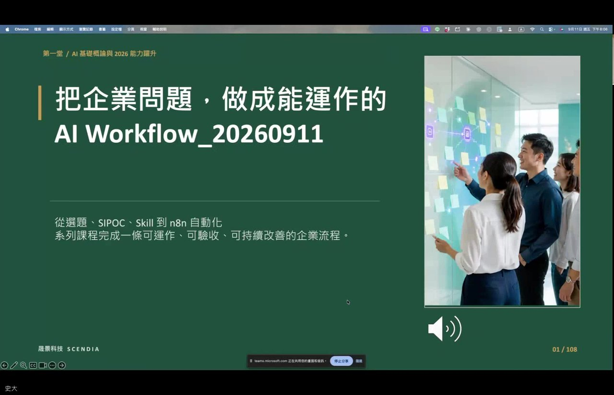
🧰 課堂提到的教材與資源
下面這些檔案與連結都留在原本的地方，沒有複製進這個網站。Skill 大禮包是講師自己的 Drive 資料夾，課堂上直接開給大家看。
| 資源 | 內容 | 在哪裡 |
|---|---|---|
| 講師簡報 | 企業 AI 高效落地實戰班_20260911，第一堂「AI 基礎概論與 2026 能力躍升」，共 108 頁（母檔案投影片編號顯示 192 頁） | 講師本機，課堂上以分享畫面呈現 |
| Skill 大禮包 | Drive 資料夾「20260811-Skill 大禮包」，內含 deep-research-explainer.skill、error-screenshot-helper.skill、smart-search.zip、youtube-thumbnail-beautifier.zip、frontend-design-skill.zip、caveman.skill、persona-forge.zip、find-skills.skill、infographic-builder.skill，另有 n8n Workflow 與上課筆記資源 | 講師的 Google Drive，課堂上開放給學員抄檔名自行搜尋 |
| 女媧 Skill | 把一個人的思維方式蒸餾成可安裝的 Skill，另有主題版本 | github.com/alchaincyf/nuwa-skill |
| Distilly（原同事 Skill） | 女媧 Skill 的前身，把一個人的經驗、判斷與工作方式做成可重複使用的 Person Profile | github.com/titanwings/distilly |
| YouTube Clipper Skill | 丟一條 YouTube 連結就自動切章節、裁剪、上雙語字幕、產社群文案 | github.com/op7418/Youtube-clipper-skill |
| LLM Wiki | Karpathy 的 gist，用 LLM 經營個人知識維基的方法論，課堂上搭配 Obsidian 使用 | gist.github.com／karpathy／llm-wiki.md |
| TigerAI n8n Skill Pack | 現成的 n8n workflow Skill 包，講師說他現在很少自己拉節點了 | github.com／MorrisLu-Taipei／TigerAI-A2A-Code2n8n-Skill-Pack |
| 教學流程動畫工坊 | 益師傅自製的單檔 HTML 工具，把教材轉成教學流程序列圖與動畫。課堂上說當晚或隔天晚上 9 點發給大家 | 益師傅課後於社群發送 |
1. 一張圖看懂這堂
這堂課的骨架其實很單純：先幫你定位，再告訴你缺的是哪一層，最後現場做給你看。上半場全部在談 L2 知識庫為什麼是所有人的瓶頸，下半場就是把 L2 做出來的實機操作。
| 時間碼 | 段落 | 在講什麼 |
|---|---|---|
| A 00:00 | 開場 | 去年的 n8n 是天花板，今年變成樓地板；今天會花比較多時間在 n8n 之外的東西 |
| A 02:29 | 紡織機與流水線 | 從手工織布到單台紡織機，再到生產線；AI 現在停在「單台產能」，少數人已經在做流水線 |
| A 05:48 | AI 轉型成熟度模型 | L1 個人使用、L2 部門知識輔助、L3 流程串接、L4 專屬助理、L5 團隊自動化 |
| A 11:00 | 資料庫與知識庫 | 左手是資料庫（CRM、ERP、訂單數據），右手是知識庫（有邏輯、有判斷） |
| A 14:17 | 現場盤點 | 請線上 88 位同仁打 1 到 4 自評，結果大多落在 L1 到 L2 之間 |
| A 15:57 | 講師自我介紹 | 半導體工程師六年、家登精密、ABB 與施耐德、PTC 參數科技、太陽能，最後創業做 AI 顧問 |
| A 18:54 | 順德工業十年 | 從訂書機到特斯拉供應鏈；2015 年開始數位轉型，2024 年打破資訊孤島的最後一哩路 |
| A 21:18 | 麝香葡萄的故事 | 一句「會賠多少錢」要查四個資料庫，沒串起來要三四天，串起來兩小時內 |
| A 27:02 | 黃仁勳的九支 Agent | 同一個架構給不同 Skill 與知識庫，就長出不同的 Agent |
| A 28:44 | 職務說明書 | 大公司給 Agent 權限的方法，就是拿 JD 來梳理 |
| A 30:50 | 台北市政府 CiviClaw | 連政府都在推，最難的其實是內部的知識管理與客服系統 |
| A 35:42 | 工具還是同事 | 現場投票，有人打 1、有人打 2，也有人打 1.5 |
| A 39:26 | AI 使用者分布圖 | 從 2026 年 2 月到 8 月，成長倍數最高的是 vibe coding 與開發工具那一群 |
| A 42:01 | 三大 AI 工具地圖 | OpenAI、Google、Anthropic 三條產品主線與四個最容易搞混的地方 |
| A 46:23 | 1865 紅旗法案 | 汽車前面要有人揮紅旗，就像你只用瀏覽器聊天，把 AI 的能力自我受限 |
| A 47:48 | 成為 AI 高手三步走 | 停止使用 Chat、寫好功能向的 Skill、管理好 context |
| A 50:52 | 組織流程表單系統 | 杜拉克的四層盤點，以及台灣數位轉型為什麼會失敗 |
| A 58:52 | 中場 | 分享畫面一直斷線，休息五分鐘換電腦，錄影分成兩段 |
| B 00:48 | 下半場開場 | 工具一直增加，工作方法卻沒有留下來 |
| B 02:32 | 女媧 Skill | 同事 Skill 的由來、名人蒸餾與保真度評分 |
| B 06:42 | 安裝前先審查 | 第一句話永遠是「請幫我檢查這個 Skill 的安全性」 |
| B 09:36 | 好 Skill 的三件事 | 知識、流程、檢查；檢查是人類最難被取代的動作 |
| B 10:44 | 跟納瓦爾聊職場 | 同時跑兩個任務，其中一個是問 Naval 自己的職涯 |
| B 12:20 | 必裝 Skill 清單 | 深度研究、錯誤截圖、智慧搜尋、縮圖美化、前端設計、人設、找 Skill、資訊圖表 |
| B 15:40 | 共用還是專案限定 | 斜線呼叫的全域 Skill 與只在專案資料夾內生效的 Skill |
| B 19:29 | YouTube Clipper | 一句話切成十大重點、上字幕、直式短影音；順手改名成 YT 剪輯手 |
| B 23:00 | Skill 的整理習慣 | 三個月整理一次，把公司 know how 寫回去再傳給同事 |
| B 25:42 | GPT-6 Astra | Computer Use、瀏覽器常駐、外掛程式與 Gmail 多帳號 |
| B 38:30 | 共用帳號的隱私設定 | 公司共用的 GPT 帳號，有兩個開關一定要關掉 |
| B 40:26 | 三個半小時的小遊戲 | Codex 操作 Godot 做出手勢辨識的魔法遊戲，本來想給女兒玩 |
| B 43:00 | GPT-6 的三個能力 | 前端網站、寫程式的驗證能力、3D 模組化 |
| B 47:20 | 2D 變 3D | 住宅平面圖變成可以第一人稱走進去的空間 |
| B 50:05 | 走進梵谷的畫 | 三張梵谷的畫拼成一個連續的 3D 世界 |
| B 55:40 | 開放問答 | 子專案軍團、資料不上雲、雙電腦接力、訂閱方案、Obsidian 與 LLM Wiki |
| B 85:00 | 益師傅收尾 | 教學流程動畫工坊預告，以及為什麼會再約這位老師 |
2. 開場：天花板變成樓地板 [A 00:00 至 05:30]
益師傅把畫面交出去之後，史大第一句話先處理期待值。他說今天是 9 月 11 日，接下來要講的是他這三四個月最常被問到的問題：
接著他丟出第一張圖，一台老式紡織機。這張圖是整堂課的比喻骨架：
- 手工織布：就是 2023 年只能聊天的 AI。
- 單台紡織機：工業時代把它裝上齒輪輪軸，單台產能大爆發。這是 2026 年多數人現在的位置，手上有一台很強的 AI，但工作方式沒變。
- 流水線：真正改變人類生產方式的不是單台機器，是生產線。他說現在已經有一組人默默用流水線的模式在工作，產值跟別人完全不同。
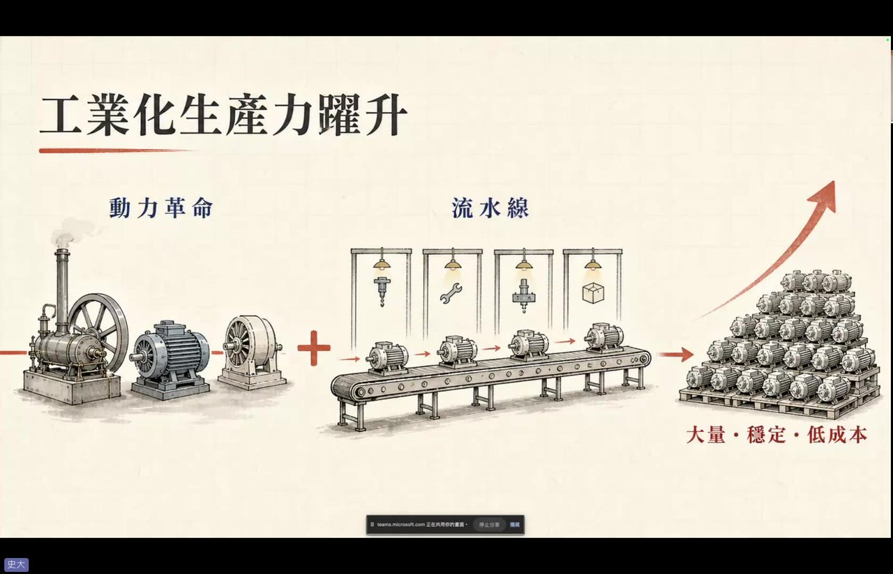
講到這裡他順手做了第一次現場互動，請正在用單機版 AI（Codex 或 Claude Code）的同學打 666。聊天室有反應之後他說了一句蠻真實的觀察：有裝 Codex 的跟沒裝的，有時候聊天就是聊不起來。
3. AI 轉型成熟度模型：L1 到 L5 [A 05:48 至 15:30]
這是整堂課最核心的一張圖，史大說是他跟一個純 IT 公司的老闆一起討論出來的，用來讓教學和企業輔導雙方快速對焦。
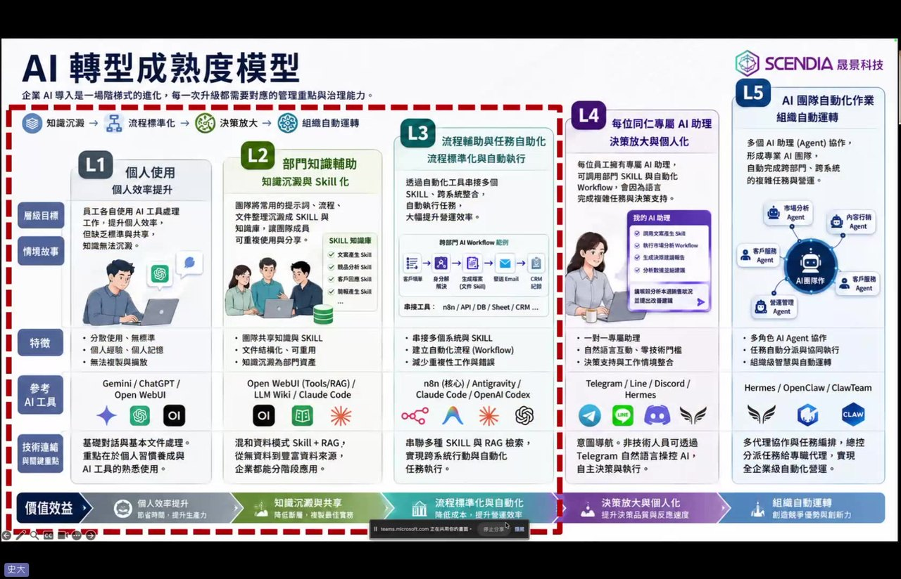
| 層級 | 名稱 | 他在課堂上的說法 |
|---|---|---|
| L1 | 個人使用 | 2023 年用瀏覽器跟 ChatGPT 聊天，2024 到 2025 年大家在提示詞工程花了非常多時間。現在這只是 L1 |
| L2 | 部門知識輔助 | 知識沉澱與 Skill 化。他說關鍵從來都不是 L1、L3、L4、L5，而是 L2，但幾乎沒有人在做 |
| L3 | 流程輔助與任務自助化 | n8n、API、資料庫串接。去年的天花板，今年的樓地板。他強調這層不可能消失，因為資料交換本來就需要方法、資安與規範 |
| L4 | 每位同仁專屬 AI 助理 | 他說 2026 年 2 月整個台灣忽然瘋狂買 Mac mini 裝 OpenClaw，三月又想賣掉；如果那時候賣掉現在一定後悔，因為 2 月之後 Agent 架構成熟，世代就不一樣了 |
| L5 | AI 團隊自動化作業 | 多個 Agent 協作。大型企業對這層既期待又害怕，所以現在都在發展 AI 治理的規範工具 |
兩隻手：資料庫與知識庫
他把 2026 年跟 2025 年最大的差別講得很清楚，東西會變成兩隻手：
- 右手是資料庫：CRM、ERP，可以用 API 訪問，存的是客戶數據、訂單、生產數據。
- 左手是知識庫：有邏輯、有判斷、有要生成的目標。要讓 AI 真的懂你、真的好用，關鍵在這一隻。
然後他講了一段很多人會心一笑的話：公司裡的 ISO 是 ISO 的流程，自己的 SOP 是自己的 SOP，每天的工作日報又是另外一套，三個長得都不一樣。你讓 AI 去判斷你的工作是什麼，它早就昏倒了。只給它 ISO 流程，你到時候一定罵它怎麼那麼笨；給它公司的 SOP，你又會說那是 2025 年的判斷，不是 2026 年的。
現場盤點：88 個人，大多落在 L1 到 L2
講了十幾分鐘之後他直接請全班自評，在聊天室打 1 到 4。結果出來，有人打 1、有人打 1 加 2、有人打 2 加 3 加 4。他看完之後說，今天要分享的其實就是 L2 跟一點點 L3，L1 就當大家都已經很強了。
4. 講師自己的路與順德的十年 [A 15:57 至 26:30]
講完架構他才自我介紹，而且把自我介紹用成論述的一部分。
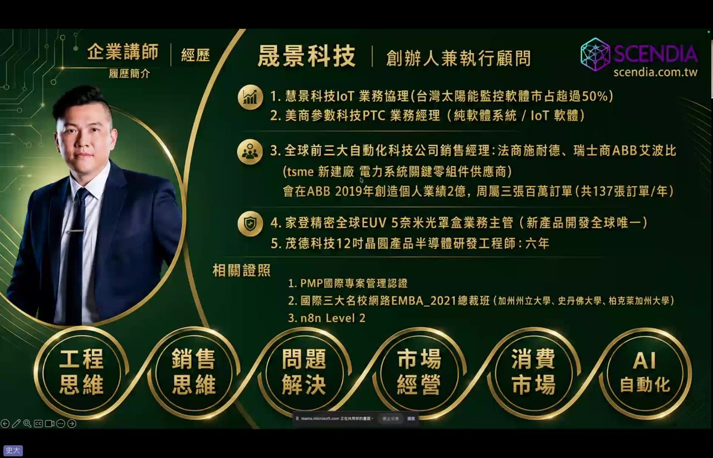
- 半導體工程師六年：他說這段訓練讓他對製程的嚴謹度、對數據建立的要求高一點。
- 家登精密：傳統 CNC 加塑膠射出的公司，現在是全球 EUV 光罩盒的主要供應商。他自嘲「年少不懂事，不知道要在一個公司撐久一點」，因為他進去的時候股價 30 塊。
- 電力系統外商：當時就知道 EUV 很耗電，所以跳到 ABB、西門子、施耐德這條線。這段他特別提到，當年簽的 NDA 很嚴謹，所以簡報上有些客戶名稱他是故意寫的。
- PTC 參數科技：做 CAD 與 PLM 的軟體公司。他說從硬體 IoT 的思維進到純軟體世界之後，整個邏輯完全不同，也剛好接上 AI 時代。
- 太陽能產業：擔任 Sales Head，在那裡建立資料底層架構的經驗。後來產業遇到瓶頸就離開，現在專注在 AI。
順德工業：一家訂書機公司的十年
他花了不少時間講順德 SDI，因為這是他手上最完整的案例。順德本來做訂書機、做文具，現在是特斯拉與大立光的供應鏈，股價從個位數來到一兩百塊。
- 2015 年就開始數位轉型。那時候沒有 AI，就是土法煉鋼，把很多資料庫慢慢串起來。
- 最大的決策是把核心從 ERP 轉到 PLM。也就是產品生命週期管理，整段產品週期都用同一個資料庫管理，這就是單一資料來源。
- 2024 年他接手做最後一哩路。他形容是「打破資訊孤島的最後一哩路」，當時還沒有 AI，非常痛苦，公司一年要花一兩千萬跟原廠合作處理軟體授權與工程開發。
- 做完之後真的實現智慧工廠。從生產線設備上的數據，一路到績效管理、HR 甚至評鑑系統全部打通，任何你想像得到的管理報表都能拿到即時數據。
麝香葡萄的故事：一句話要查四個資料庫
為了解釋「即時」到底值多少錢，他講了一個假設的情境。前陣子韓國麝香葡萄價格崩盤，假設你是零售通路的董事長，禮拜一早上八點開早會問一句：我現在會虧多少錢？
| 要查的資料來源 | 內容 |
|---|---|
| 倉庫庫存 | 公司現在手上有多少 |
| 在途（載製） | 已經從倉庫出去、正在運輸車上往門市的數量 |
| 貨架 | 現在擺在各門市架上的數量 |
| 衛星倉 | 還沒上架、放在分店倉庫的數量 |
他的對比很直接：沒把資料庫串起來，要到禮拜四、花三到四天，才會有一份兩頁的小報告告訴董事長大概會賠幾千萬，要不要批准週末特價促銷。串起來的公司，包含做美工報告在內，兩小時內就能做完決策，而且可以直接模擬打八折、七折、六折各賠多少。
為什麼他從 n8n 轉向 Agent
創業之後他持續在 n8n 這條賽道上耕耘，1 月 30 日還在 n8n 台北年會上演講。他說當天台上六位講者講的都是資訊業的應用，只有他很土法煉鋼地講硬體 IoT：怎麼讓警報器響的時候，用最低成本讓 LINE 收得到訊息。以前這件事要找人寫幾百行程式、花幾萬塊，有了 n8n 之後幾乎不用錢，租個十塊錢的伺服器就做完了。
2 月 1 日開始他轉去研究 Agent，那段時間他形容得很誠實：右手知道 Agent 超強，客戶卻只要 n8n，像在鬼打牆。後來他想通一件事，L3 是躲不掉的，因為真正做到 AI 轉型之前那一步叫數位轉型，還是得把資料庫打通，或者重新建構 AI 友善的資料庫。
5. 九支分身與職務說明書 [A 27:02 至 30:30]
他放出黃仁勳在台上、身後站著九支 Agent 的那張畫面，先問「認識這個人嗎」，請認識的打 888，然後笑說那也是他的乾爹。
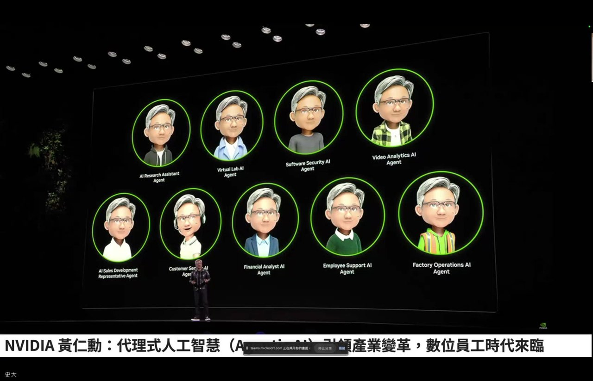
他舉的例子很白話：正中間那支財務分析 AI，一定跟影像分析 AI 不一樣，如果兩個長一樣那就慘了，做財務的忽然跑去拍電影。那要怎麼做到一套架構可以同時支援這兩種？答案回到 L2 的 Skill，要做很仔細的工作流程梳理。
大公司的做法：拿 JD 來梳理
他說大公司梳理的方法就是拿 Job Description 職務說明書：
- 職務說明書被賦予什麼權限，就給 AI Agent 什麼權限。
- 職務說明書寫他需要哪些技能或知識，就把那些東西給它。
接著他講了一個很多人沒想過的成本面向。如果你的工作執掌分得不清楚，AI 每次回答一個問題都要把九大領域全部爬過一遍，Token 消耗就是分開處理的好幾倍。他的說法是，難怪 Token 會不夠用。
6. 工具還是同事：政府、決策者與那張分布圖 [A 30:50 至 45:30]
連政府都在做了
他先放出台北市政府的 CiviClaw 畫面，請有看到市長的人打 888。然後強調這張圖很重要，回去可以跟老闆講「連政府都要推了」，而且特別聲明這不是在講政治。
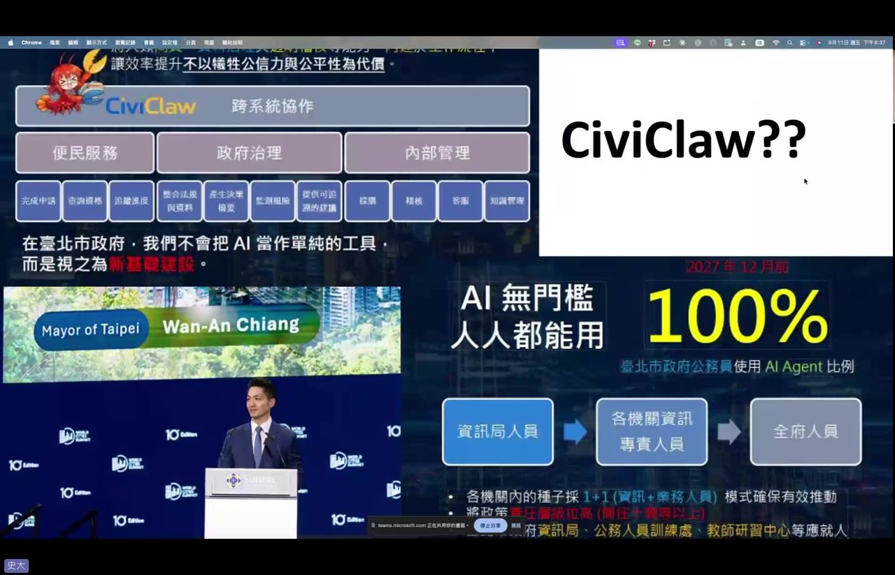
他說不管藍的綠的，新北、台北、桃園、台中、高雄、台南都已經成立智能體的專案跟團隊，他自己也輔導過部會的黑客松。然後他點出整份規劃裡最難的一塊：
對於時程他也給了自己的判斷：官方說 2027 年 12 月，他認為會更慢，但原因不是 AI 能力不夠，也不是知識不會整理，而是台灣目前在資安管理法規上對 Agent 比較不去碰它。他舉例說銀行業目前不太喜歡 Agent 這種工作模式，但銀行業卻大量使用 n8n 來管控公司的資料流程。
現場投票：它是工具，還是同事
接下來是這堂課最好玩的一次互動。他請大家打 1（工具）或 2（同事），結果有人打 1 加 2，有人打 1.5。他笑說高手都寫 1.5，然後講出自己的答案：內心深處覺得它還是一個超好用的工具，但它已經有同事的友善跟認真負責，所以他現在是讓 Agent 去幫他開發工具。
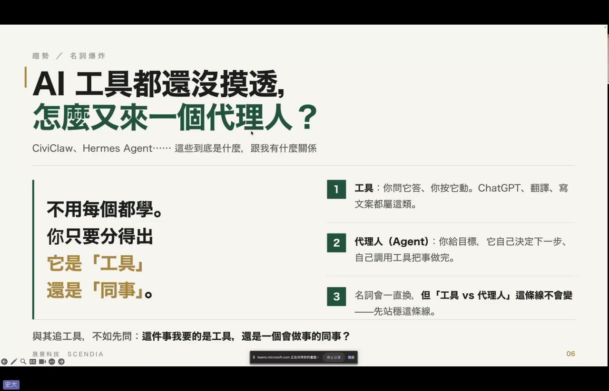
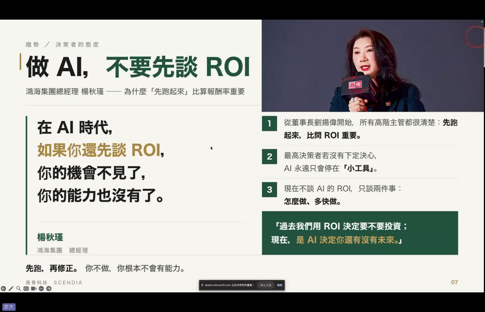
談到投資，他換了一個說法：這個同事是哈佛大學畢業的，你覺得一個月要投資他多少錢？現場調查下來大多數人還在 20 美金。他接著講了當天他認為最嚴重的消息，GPT-6 已經紅到 200 美金方案不再開放訂閱，他的解讀是它好用到沒辦法再分給更多重度使用者。
成長最多的是哪一群人
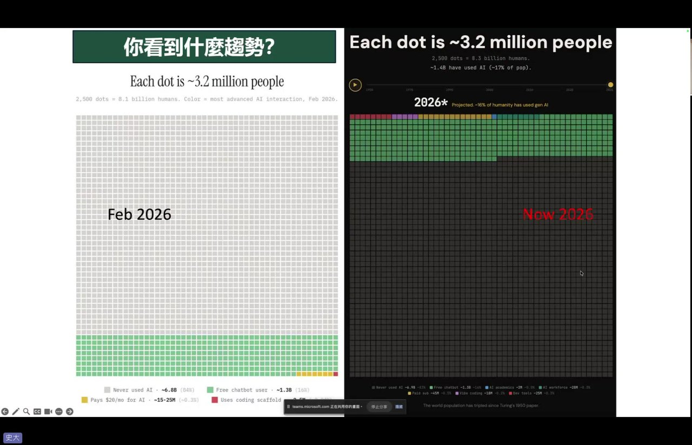
他現場問大家哪個顏色成長倍數最多。答案是紫色加紅色，也就是真的在用 AI 開發東西的那一小群。他接著點名：
「就像益師傅，他不是從去年就一直做工具給大家用嗎？」他說這群人本來是千分之一的一顆紅點，現在是領先全球十倍成長的新時代工作者，而跨進去的關鍵就是 L2 加 L3，沒有跨不過去的坎。
三大 AI 工具地圖
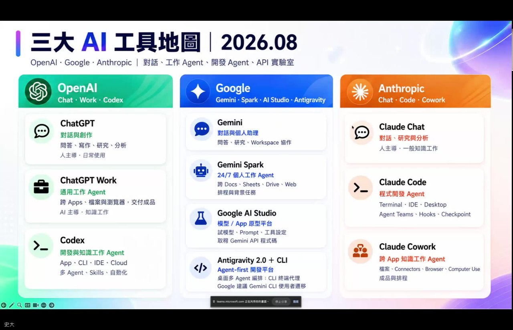
他的整理方式是先用三條產品主線分類（對話助理、通用工作 Agent、開發程式 Agent），再記住四個最容易搞混的地方。其中兩個他特別展開：
- 額度是分開的。他提醒 ChatGPT 的網頁版 Work 額度跟 Codex 額度是分開計算的，很多人沉浸在 Codex，結果 Work 額度就浪費掉了。既然都花那麼多錢，Work 要好好用，它一樣可以調用 Agent，一樣可以接 MCP 跟外掛。
- Gemini Spark 的定位。他認為 Spark 可能會是未來 Agent 治理最成熟的領域，因為它幾乎不用訓練就內建大量工具與 Skill，在 Google 體系的超大型企業市佔率正在提高。不過他也說得很實際：我們沒有那麼有錢、也不在超大公司，所以還是要好好用 Claude Code、Cowork 或 Codex。
7. 紅旗法案：成為 AI 高手的三步走 [A 46:23 至 50:30]
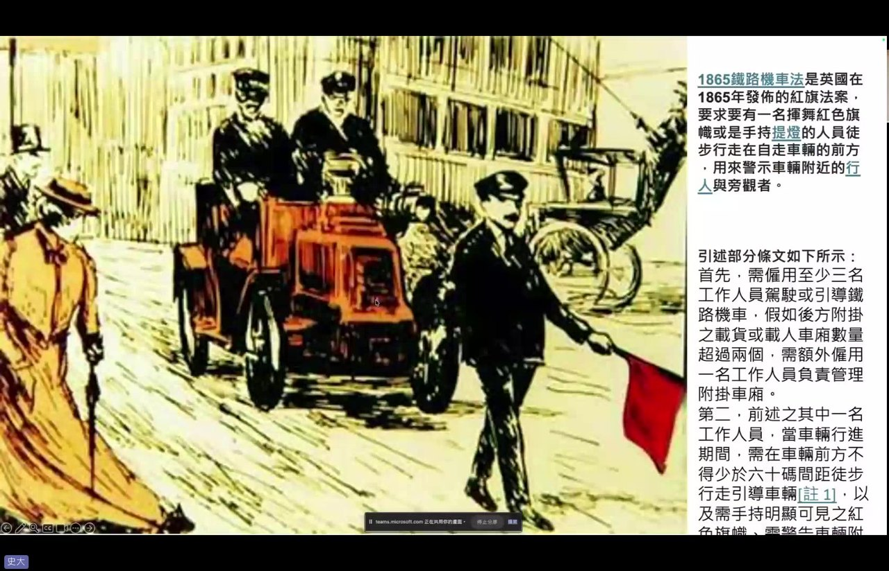
他用這段歷史對照現在：汽車進城的時候，因為怕撞到馬車，就規定要有人揮紅旗走在前面。而現在還只用瀏覽器聊天的工作者，處境其實一樣。
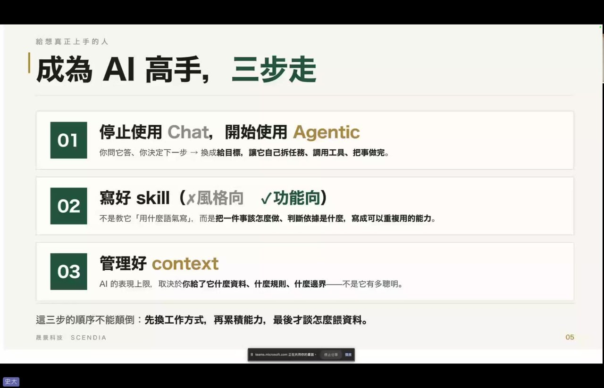
- 停止使用 Chat，開始使用 Agentic。從「你問它答、你決定下一步」換成給目標，讓它自己拆任務、調用工具、把事做完。他補充說 Work 或 Cowork 其實也是智能體，至少不要只停在第一行的純聊天。
- 寫好 Skill，而且是功能向不是風格向。不是教它用什麼語氣寫，而是把一件事該怎麼做、判斷依據是什麼，寫成可以重複用的能力。他說很多重複性的工作也可以直接跟 AI 講一句「請幫我做成 Skill」就搞定。
- 管理好 context。AI 的表現上限取決於你給了它什麼資料、什麼規則、什麼邊界，不是它有多聰明。
大航海時代的標本
講到上下文管理，他又換了一個比喻。大航海時代英國商船從非洲抓回一隻鸚鵡，路上不小心死掉了，就把牠送去大英博物館做成標本。我們手上那些十幾年的舊資料就像那隻鸚鵡，要讓它變成有用的標本，需要做的事情叫分類。
8. 組織、流程、表單、系統：數位轉型為什麼會失敗 [A 50:52 至 58:50]
這是上半場的收尾，也是他自己最想留給大家的一頁。他從杜拉克那句話切入：組織的目的，是使平凡的人能做出不平凡的事。
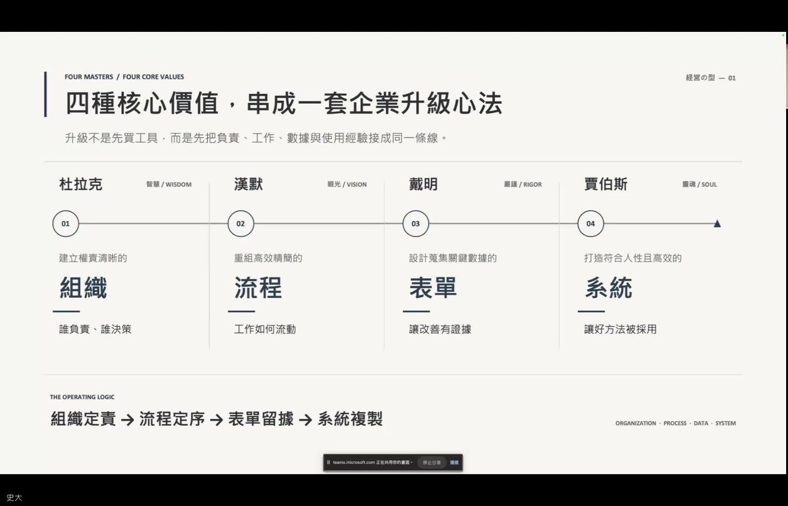
他一層一層往下推的邏輯是這樣的：
- 先有組織。把手上的資料做分門別類，誰做什麼工作、有什麼權限，都要設計出來，再跟你的檔案與資料庫對上。
- 再有流程。有了人之後，為了解決某些問題會產生有目的、有功能、有步驟的東西。他說這跟 SOP 很像，遠古時代還沒有 ISO 概念的時候，就是有一個出貨流程、有一個報價流程。
- 然後有表單。流程中間沒有記錄，交接的時候就斷掉了。所以要有表單，有欄位、有填寫規則、有人審核。過去是紙本，進步一點是 ERP 或 Excel。
- 最後才有系統。系統裡面才會有功能區分、權限、資料串接與自動化。
台灣的逆向悲劇
他接著講了最刺耳的一段。台灣很多中小企業確實踏踏實實地把組織、流程、表單做出來，也做了一個還不算太龐大的系統。結果因為要走向全球化，老外說 SAP 的 ERP 很好用，公司就買了一套超大系統。
新系統下來之後就有新表單，新表單又逼著公司調整流程，最後那些被原本制度訓練出來的資深員工就離開了。他把整條線倒著畫出來：新系統、新表單、新流程，最後人也變新的。
然後他當著全班的面稱讚了一次主持人。他說他很喜歡益師傅的做法，因為益師傅真的是從頭思考什麼樣的組織、什麼樣的人、需要做什麼事情的流程，把表單整理好之後直接變成系統工具；社團裡那一堆工具不是天馬行空先有系統再回頭補表單。
他對 vibe coding 的實話
他非常推薦大家學 vibe coding 自己做工具、自己做系統，但也直接承認另一面：IT 人員一定會反對，因為這些散亂的系統到時候沒辦法收斂、沒辦法盤點。他的建議是，比較聰明的企業還是鼓勵大家做自己的工具，但要有先決條件，例如資料庫統一選用（AWS、地端或 Google），並且提供沙盒環境。
上半場結束前他做了最後一次確認，請聽懂的打 66666。之後因為分享畫面一直斷線，益師傅提議休息五分鐘，兩人決定換一台電腦，錄影也就在這裡切成上下半段。
9. 女媧 Skill：把一個人的判斷蒸餾下來 [B 00:48 至 12:00]
下半場一開始他就把問題講白：這個 AI 時代有點辛苦，工具一直增加，工作方法卻沒有留下來。他舉的例子很日常，有很多同仁很會剪影片，默默地在剪，剪的方法跟你不一樣，而這些方法從來沒有被留下來。
同事 Skill 的由來
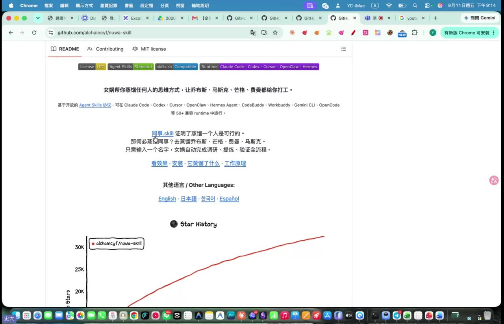
他說女媧 Skill 重要的地方不在它多厲害，而在它驗證了一件事。故事是這樣的：某家 AI 公司有位大神要離職，團隊為了把他的 know how 全部留下來，做了一個「同事 Skill」，把他的工作邏輯與知識庫做了非常詳盡的萃取，連方法論都包進去。
這個專案後來累積到兩萬顆星（他當場的說法是「全球有兩萬人兩萬顆星，這個你要乘一百」）。驗證成立之後，同一套方法論被拿去萃取名人，就成了女媧 Skill。
| 項目 | 他在課堂上講的內容 |
|---|---|
| 萃取的對象 | 賈伯斯、川普、馬斯克、查理蒙格等人，素材來自網路上大量的訪談、X 的貼文與對話 |
| 保真度評分 | 全員 85 分以上，賈伯斯與納瓦爾更達到 97 分。他補充說去年那種「假設你是賈伯斯你會怎麼思考」的一句話提示，大概只有 40 分 |
| 實際用法 | 年初有人把川普在 X 上講過的話貼進裝好的 Skill，做股票的對應分析。他的說法是「聽說勝率是蠻高的」 |
| 他自己的用法 | 他很喜歡納瓦爾寶典，所以常常跟納瓦爾聊天 |
安裝之前，先叫它自己查自己
示範的時候他強調要有安全意識，所以貼上 GitHub 連結之後的第一句話永遠是同一句：
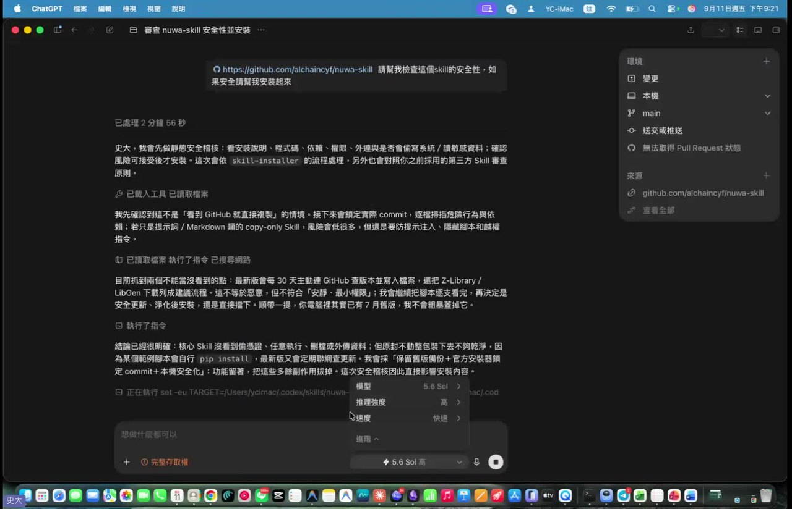
這一段其實是整堂課最有教學價值的畫面之一。Codex 不只說安全或不安全，它還挑出兩個「不能當沒看到」的點，包括最新版會每 30 天主動連 GitHub 查版本並寫入檔案，以及把某個下載來源列成建議流程。它的評語是「這不等於惡意，但不符合安靜、最小權限」。
同時跑很多個圈圈
安裝還在跑的時候，他直接在本地端的 App 開第二件事介入，畫面左下角同時有兩個任務在轉。他說半夜不睡覺的時候可能一次跑五六個。示範的那一題是拿女媧 Skill 去問自己的職涯。
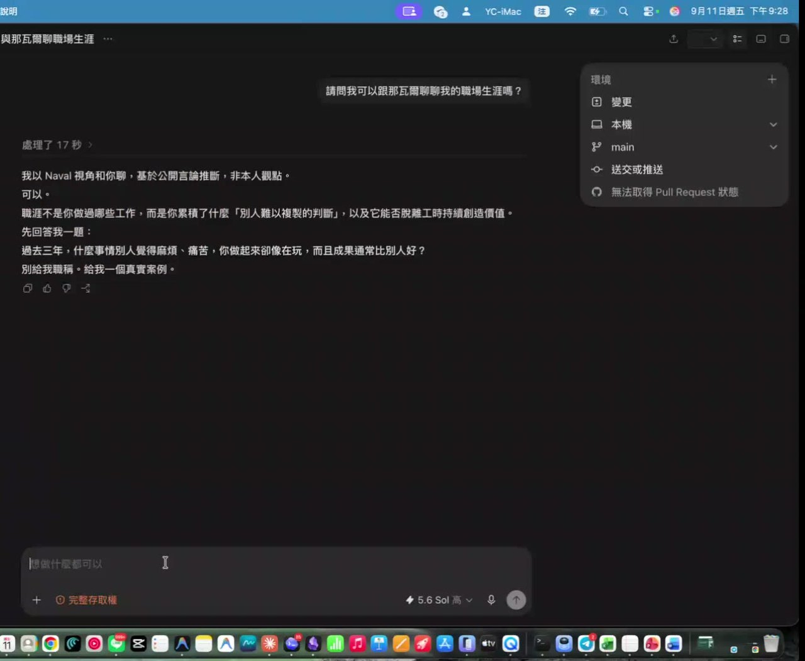
他還分享了一個自己的用法，蠻打動人的。他說他沒有辦法跟益師傅聊天，所以他把益師傅做過的事情丟給這些名人 Skill 幫他分析，結果他看懂了：益師傅這麼佛系地做社群、做教學，背後是有理想性的，所以他才會一直研究投資理財，因為他知道大家會需要。他說這也是他今天會站在這裡的原因。
10. 必裝 Skill 清單與整理習慣 [B 12:20 至 25:00]
他把自己上課常請大家裝的 Skill 開出來，並且先講清楚：不用下載他的版本，因為那是為了教學方便怕有些同學不知道去哪裡載；你只要把檔名原封不動 Google 一次，就會找到對應的 GitHub 連結。
| Skill | 他說明的用途 |
|---|---|
| deep-research-explainer | 擔心 AI 給的東西沒有來源依據，或是要做論文探討需要深度思考的媒介。他說這個 Skill 的遊戲規則寫得很清楚 |
| error-screenshot-helper | n8n 跑不動、程式不能部署的時候，截圖丟給它，它會一步一步引導你做對。他特別說這個蠻省 Token，因為它不會從頭思考你要做什麼，而是先判斷你現在在哪個畫面、截了什麼圖 |
| smart-search | 偏新聞類、接近爬蟲，處理有資料面向的搜尋 |
| youtube-thumbnail-beautifier | YouTube 畫面與縮圖的美化 |
| frontend-design-skill | 他說這個一定要裝起來。AI 做出來的工具會越做越漂亮，靠的就是它 |
| persona-forge | 行銷方面的人設建構 |
| find-skills | 許願說「有沒有什麼 Skill 可以幫我找一下網路上 GitHub 最紅的 Skill」，就是用這個裝起來的 |
| infographic-builder | 他自己說這個比較少用到，一樣是美觀類的 |
| caveman | Skill 大禮包裡的另一個檔案 |
共用 Skill 還是專案限定
有同學問：是不是不同專案要裝不同 Skill？他的回答是「原則上是，但可以做成例外」，然後把差別講清楚：
- 共用 Skill：裝上去之後，按斜線就可以在每一個資料夾呼叫。他自己的課綱、短影音腳本、正式文件那幾個，都是在任何專案資料夾裡都叫得出來。
- 專案限定：一個好的工作流程要有知識庫、流程檔案、檢查標準這三樣，如果只想在同一個專案資料夾用，這三個就會包在本地資料夾裡，其他專案看不到。
- 預設是全域。他提醒現在的 AI 安裝 Skill 時預設會裝成所有專案都能調用，只有你特別講「這個 Skill 只有這裡用」，它才不會裝上去。不想汙染其他資料夾就要特別交代。
YouTube Clipper 與 YT 剪輯手
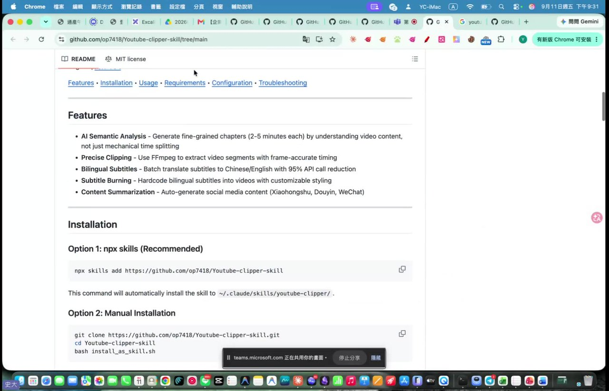
示範的時候他先用同一句安全審查提示，只是多加一句：「我第一次使用，請告訴我教學步驟，一步一步教我。」裝好之後他到 YouTube 找一支超過二十分鐘的 GPT-6 影片，然後下的指令是：
他說接著就不管它了，它會把十段都切好、上完字幕。然後他做了一件很小但很實用的事：把這個本來是英文名字的 Skill 改名叫「YT 剪輯手」。理由是按斜線的時候一堆英文根本看不懂。
三個月整理一次
這一小段是他這堂課的隱藏重點。他說很多人開始用 Codex 之後 Skill 就爆炸了，幾百個 Skill 然後就亂掉，因為 AI 聰明到會自動幫你調用，你根本不知道什麼時候用了哪一個。問題會在某一天爆出來：同事說要你那個自動剪輯 Skill，你傳哪一個？
他的做法是每三個月做一次整理。原因是第一次裝完是原作者的版本，你跟它互動一陣子、把公司的 know how 寫進去之後，它已經變成公司自己的 Skill 指示庫加工作流加偏好，這時候傳給同事才有意義。
11. GPT-6 Astra 的三件事與設定巡禮 [B 25:42 至 47:00]
這一段他自己說「比較偏知識」，所以講得比較快。他認為 GPT-6 最大的差別是 Computer Use。
關於訓練方式，他講的是他看到的新聞加上自己的判斷，這點他有講明：他說 OpenAI 買了幾千台到幾萬台的 Mac Studio 或 Mac mini 做特定訓練，訓練的不是 AI 大腦模型，而是使用場景，讓單機去做特定行為、做得好就給高分，再把那些順暢的操作判斷邏輯打包起來。他的形容是「我看到的新聞，然後我覺得可能性相當高」。
他的實際體感是：前幾代的 Computer Use 滑鼠動得像烏龜，現在快到有時候比人類還快。
要用 Computer Use，這些要先打開
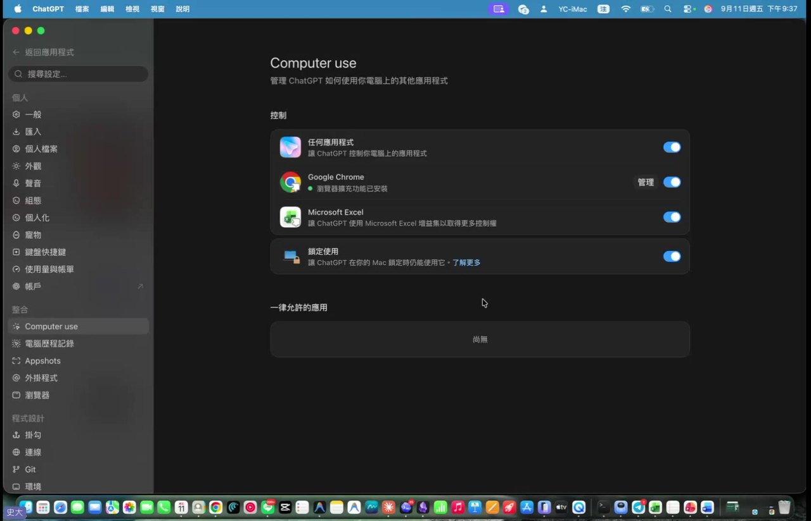
- 裝官方的 Chrome 外掛。他提醒 ChatGPT 太紅，盜版很多，要確認是 OpenAI 公司出的。裝好之後瀏覽器右邊會多一個常駐的 AI 面板。
- 打開鎖定使用。他的說法很有畫面：如果你不想讓它下班，電腦休眠了還要讓它繼續工作，就把這個打開，它就不會下班了。
- 電腦歷程記錄。他建議可以打開，理由是可以回去看看自己今天幹了哪些蠢事。但他馬上補了但書：如果是公司給的共用帳號，這個就不要開。
- Appshots 已經內建。他說 7 月的時候還要自己安裝才能用，現在直接內建了，這也是很重大的更新。
外掛程式與 Gmail 多帳號
他把 MCP 比喻成 Type-C：iPhone 也 Type-C、三星也 Type-C、華為也 Type-C，所以資料調用就可以共用。現階段他覺得最好用的是 Gmail。
然後他花了一小段在解一個大家常問的疑惑：為什麼 Gmail 只能登一個帳號？答案是要在網頁版的設定裡才能加多帳號。他自己的配置是回客戶的信用公司網域那個帳號，做 AI 訓練的時候用另一個 Gmail。他說這個更新讓他整個工作流程變得很順暢，不用再跳來跳去，Google 日曆也可以掛兩個。
另外他推薦開發用的幾個外掛：GitHub、Supabase（資料庫免費額度大）、Vercel（沒買網域就用它的免費網域，但有時間與容量限制）。他也提到重度開發者可以接 Linear 當管理工具，不過當天沒時間教。
共用帳號一定要關的兩個開關
至於省 Token，他分享了自己的自訂指令做法：可以寫「儘量幫我用最低 Token 的方式做完」，但他自己把那句話刪掉了，因為有時候它會省過頭。他的理由很直接：他要做的事情比較多，不希望為了省而犧牲正確性。
三個半小時做出來的遊戲
因為換了電腦，原本的 demo 檔案不在手邊，他乾脆打開自己的臉書給大家看一段遊戲畫面，說那是他花三個半小時做出來的。做法是把 Codex 跟 Godot 放在一起，讓 Codex 去操作 Godot。
- 他說大家最常用的是 Blender，可以做很細膩的捏塑動作，但現在這些都不用自己做了，直接叫 Codex 去操作 Blender 或 Godot 把遊戲捏出來。
- Godot 的好處是輕量化，很舊的電腦也裝得起來，而且免費。
- 角色動作是很重要的模組，每一塊會動的都是分開調教的，所以要叫它做什麼模組就獨立開一個對話去開發。
- 他做了一個過關時學新魔法的機制：開鏡頭辨識手勢，做對了下一關就出現新魔法。
GPT-6 的三個能力
| 能力 | 他的說明 |
|---|---|
| 前端網站設計 | 以前要寫程式碼處理圖片，現在一句「幫我更新網站的底圖，我希望還有動畫可以呈現」就能生成素材並塞進網站的指定位置。他說能精準塞到指定位置，靠的是螢幕截圖判位的能力 |
| 寫程式碼 | 提升在驗證結果。寫完跑完之後它會截圖，再調用另一支 Agent 去驗證前一支到底有沒有寫對。他也老實說「它有時候會偷懶，自問自答到 100 分」，但整體驗證能力確實大幅提升 |
| 3D 模組化 | 變得非常容易，可以做小遊戲、做可互動的 3D 場景 |
他舉了一個很有感的例子：現在可以直接說「我想要做一個跟 Salesforce 一模一樣的系統」，它真的做得出來，而且不只是刻皮，會把後面對應的表單也建好。他給的分數是，純 IT 角度的 vibe coding 以前大概 30 分，GPT-6 已經可以做到 70 到 80 分，前台設計、中台資料庫、後台管理都整合在一起。
12. 2D 變 3D：走進房子，也走進梵谷的畫 [B 47:20 至 55:00]
這是全場最有記憶點的示範。他丟進一份住宅平面圖 PDF，指令分成兩段下。
他特別提醒工作流程的順序很重要：先把 2D 轉成 3D 圖層，再要求第一視角走進去。不能一步到位。
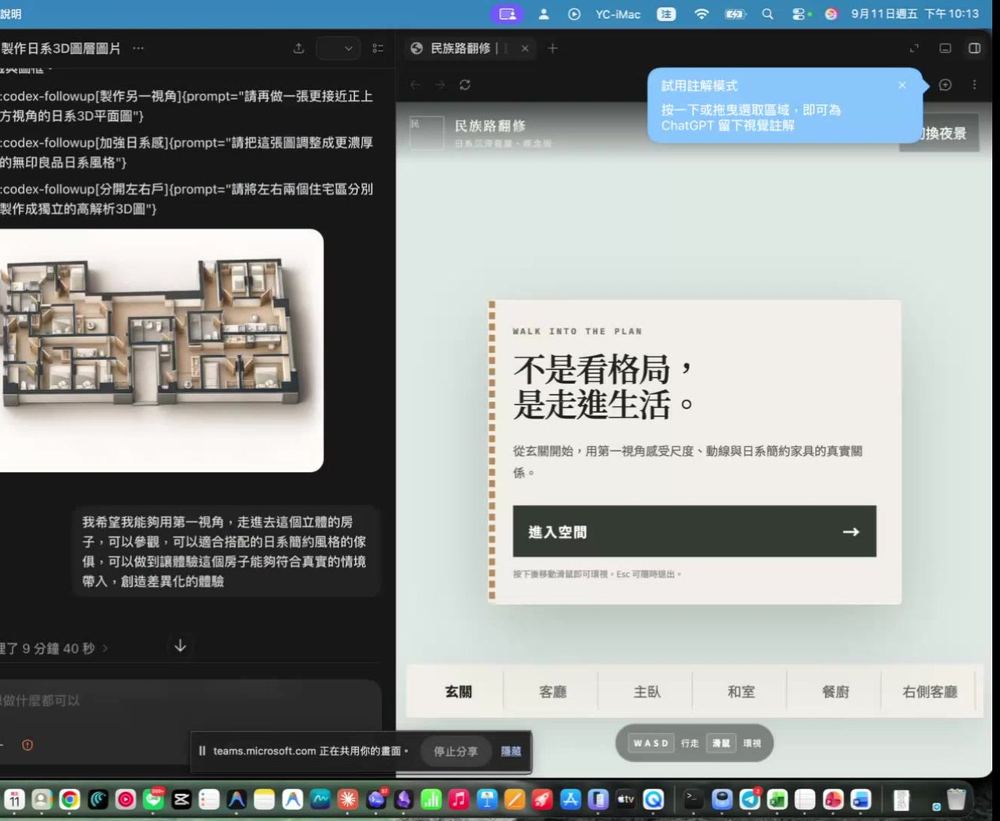
接著他放了一段 YouTube 影片，內容是同一套手法的極致版本：把梵谷的三張畫（臥室、夜間露天咖啡座、星月夜）分別從 2D 轉成 3D，再處理一個更難的問題，怎麼讓三個場景形成連續的空間。做法是在俯視圖上建構巷道、街道這類連接通路，讓它們處在同一個場景裡。
最後他補了一個很多人不知道的：3D 場景做完之後，可以直接跟它說「請幫我錄製 10 秒 20 秒的影片」就完成了。他當天示範用的結尾片段與字幕都是這樣產出來的，只是會比較燒 Token，因為一次要調用很多模組。
13. 現場問答 [B 55:40 至 84:00]
問答佔了下半場快一半，而且問題都很實際。這裡挑幾個回答完整的。
把大專案拆成子專案軍團
他分享自己的做法：本來在同一個 CRM 視窗一路做下去，上下文拉得很長，AI 開始飄、開始忘記。後來他把它拆成四個子專案，而且這四個子專案跟母專案是有關聯的，可以互相呼叫，等於就是 Agent to Agent 的架構。
最實用的一句在後面：子軍團不需要最貴的模型。他說子任務通常很簡單，可能是檢查或寫文章，調成比較低階的模型就好。他的體驗是拆出去之後既可以同步進行，模型費用也變得比較省。他把這件事扣回上半場第一張流水線的圖。
機密資料怎麼辦
- 先關掉訓練授權。GPT 設定裡可以關掉把你上傳的資料作為訓練，這是第一個動作。他說不知道在哪裡關就 Google 一下，這種有 SOP 的東西問 AI 最快。
- 盡量不要用網頁版。用網頁版資料就是丟到雲端，根本沒有機會防守。
- 用地端的 App。他的理由很具體：地端要進到你的資料，得先穿透 Mac 或 Windows 的登入帳號密碼，再穿透 GPT 的登入帳號密碼，然後才到資料夾授權，等於多了兩三層保護。
兩台電腦怎麼接力
有同學問地端能不能兩台電腦接著工作。他說自己的做法比較傳統，因為他認為產品開發需要有版次版別的觀念：在公司做完就上傳 GitHub 做一個當天的工作總結，回家再從 GitHub 拉下來繼續，睡前再把熬夜做的覆蓋上去。
他給的理由不是技術問題，而是人的問題：人在不同情境下的專注度跟邏輯不同，常常會衝突，或是事後覺得昨天那版比較好。所以他認為比較安全的做法不是無縫銜接，而是做到哪裡就上傳到哪裡。
訂閱方案與省錢的邏輯
他的配置是 GPT-6 一百美金、Claude 一百美金、Gemini 訂一年約十七美金。建議是：如果你不開發工具，20 美金就很好用；但如果要體驗開發 3D 遊戲或很厲害的網站，在學習 AI 的路上值得訂閱一次 100 或 200 美金，玩完再降回 20 美金。
做筆記用什麼
有同學問記錄所學的軟體，他推薦 Obsidian，但給了一個前置步驟：裝起來之後第一個動作不是開始記，而是先跟 AI 討論你的工作是什麼、手上有什麼資料、想整理什麼，請它幫你規劃欄位、標頭、標籤。他的比喻是圖書館編號亂編就找不到書。
接著他推薦 Karpathy 的 LLM Wiki 方法論，說它把 AI 調用 Obsidian 的邏輯方法跟標籤表頭都整理好了，是 AI 友善的介面，在 Obsidian 裡搜尋優化做得很好。概念上就是把手上的一萬筆資料做成知識圖譜，不用一開始就找到最正確的檔案，先找到地圖上那個點，確定了再進去看。
對 Notion 他也給了自己的答案，而且沒有客套：他個人不喜歡用 Notion 整理資料了，因為對 AI 不友善，叫 Codex 去撈 Notion 的資料第一個慢、第二個有些撈不到。他現在做了一個小工具，跑自動化把 Notion 上的資料倒成 Obsidian 的版本。
他自己的使用情境蠻具體的：讀完納瓦爾寶典之後，跟 AI 聊、請它問他十個問題，討論完再寫回 Obsidian。隔天早上拿手機看一下，就知道昨天跟納瓦爾講了多少廢話。他說手機只拿來讀，所有編輯與新增都是用 Claude 維護。
其他零星問答
- Codex 可以指揮其他 Agent 嗎？他的做法是叫 Codex 做一個工具，再去指揮其他 App。他說 Codex 跟 Claude 本來有互相調用的功能，後來被關掉了，但既然做得到，他就直接許願要一個工具，大概半小時內就做出來了。反過來讓 Hermes 控 Codex 也可以，只是需要做一個中繼的指令轉換，電腦不夠強會跑不動。
- NAS 當中介可以嗎？可以，但他提醒 NAS 不是 AI 友善的介面，所以不同的 AI 第一次進去會在裡面寫一支小程式做檔案翻譯，你會看到一堆奇奇怪怪的資料夾。他的建議是直接叫 Codex 幫你搬。他分享自己剛做完的一次：把雲端硬碟、NAS 跟 iMac 做同步整理，用 5.6 那一版跑了整整三天；前兩天叫 Astra 做類似的事，一天就做完了。他說這就是 Computer Use 優化的幅度。
- Token 剩多少才要換視窗？他說可以裝一個顯示比例的小程式或 Skill，就看得到百分比。他自己通常 85% 就換。他也說 Codex 桌機版現在看不到比例，這個他下堂課再講。
14. 益師傅收尾：教學流程動畫工坊 [B 84:00 至 90:00]
問答收不住，益師傅幾次出來擋，說要放老師休息一下。他還跟史大說了一段很有畫面的話：千萬不要問這群人累不累，也不要問要不要再加碼，他們可以到十二點還默默地開著機器，「我們這群都瘋瘋的」。
然後他講了自己觀察人的方法，說這是為什麼他會持續邀約這位老師：你只要發現某個人動不動就提到家人，基本上都是善良的人。史大在課堂上確實提過好幾次女兒。
預告：教學流程動畫工坊
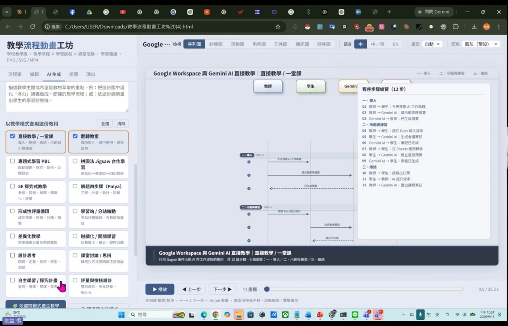
- 輸入可以是一本書、一份簡報、一個相關文案，或一個外部連結。他當場舉的例子是丟一份 Google 提示詞白皮書進去。
- 輸出除了序列圖，還有狀態圖、活動圖等多種圖型，而且每一個都會動。
- 他說這個工具本來是做企業流程用的，他把它改成也可以做教學動畫。
- 他也解釋了為什麼選 UML 而不是 Mermaid：Mermaid 包容性比較大，UML 只要錯一個字或空白就畫不出來，難度比較高，但介面上會比 Mermaid 漂亮。他說這是他年輕時做系統分析就在用的圖。
他當場承諾隔天線上研習結束後，晚上九點把工具送給大家，沒來的人也一樣會送。最後他說錄影生成比以前慢，當天會盡快上傳，如果不行就晚上再放。
15. 老師金句
以下每一句都對得回逐字稿，只去掉了語助詞與重複字，後面附時間碼。
16. 資料來源與整理說明
- 原始素材：Google Drive 上的兩段課堂錄影。A 段 59 分 21 秒，B 段 90 分 17 秒，合計約 2 小時 30 分。
- 逐字稿：用 faster-whisper（large-v3-turbo）把兩段音訊接成一軌處理，切成 75 段 120 秒的視窗分別辨識，開啟語音活動偵測以避免重複幻覺，最後得到 3,990 段帶時間碼的逐字稿（A 段 1,539 段、B 段 2,451 段）。辨識完用 OpenCC 的 s2tw 轉成繁體，半形標點轉全形。
- 錯字處理：只修可以確定的，例如講師名字被聽成別的字、工具名（Codex、Claude、Gemini、n8n、MCP）。不確定的一律保留原樣，沒有猜。例如辨識成「色香葡萄」的地方，本頁在自己的敘述中寫成麝香葡萄，但沒有把它放進引號。
- 引號規則：本頁每一句加引號的發言都能在逐字稿中找到，只去掉語助詞與重複字，不會為了通順而腦補。凡是辨識結果不確定的段落，一律改用描述的方式處理，不加引號。畫面上的文字（例如 Codex 的回覆、簡報標題）以截圖為準。
- 畫面來源：用 ffmpeg 場景偵測（門檻 0.12）加上每 60 秒固定補抓，切換點往後偏移 1.2 秒再抓，濾掉過暗與過平的畫面並用 dhash 去重，共得到 137 張候選畫面，最後挑 20 張進入本頁。這堂課沒有傳統意義上的簡報檔可以引用，所有畫面都是錄影中的實機操作與投影片畫面。
- 隱私處理：錄影右側整段是 Teams 的參與者名單，會出現學員姓名。所有截圖都把右側約 12.6% 裁掉。另外兩張（Codex 對話畫面）左側側欄會列出講師的客戶專案名稱，也額外裁掉左側。畫面左下角的「史大」與「俊益 楊」是兩位講者本人在課堂上公開使用的稱呼，予以保留。
- 流通限制掃描：用外流、不得、宣誓、版權、授權、保密、不能公開、散布等關鍵字掃過完整逐字稿，沒有發現任何整堂不得外流的規定，也沒有針對特定檔案的轉發限制。命中的幾筆都是課程內容本身（講師談前東家的 NDA、軟體授權、資料夾權限）。講師全程主動分享連結並多次說「送給大家」，益師傅在收尾時也明確表示當天會把錄影上傳。
- 刻意沒有收錄的部分：
- 講師的個人臉書頁面與貼文畫面（示範遊戲時開過），含個人資料與好友頭像。
- 他的 ChatGPT 個人化設定與已連結帳號畫面，上面有多組電子郵件位址。
- 他的待辦事項清單畫面，內容是他自己的商務行程。
- 示範用的住宅平面圖 PDF 原圖（含尺寸標註與專案名稱），本頁只收 3D 成果與導覽頁。
- Teams 聊天室的學員發言與參與者名單。
- 講師的 108 頁簡報未逐頁收錄，本頁只取與敘述直接相關的頁面。
- 沒有課後作業。這是一堂觀念加實作的直播課，課後要做的事是講師建議的那兩件：把成熟度模型截圖帶回去跟老闆對焦，以及回家把 Codex 裝起來。